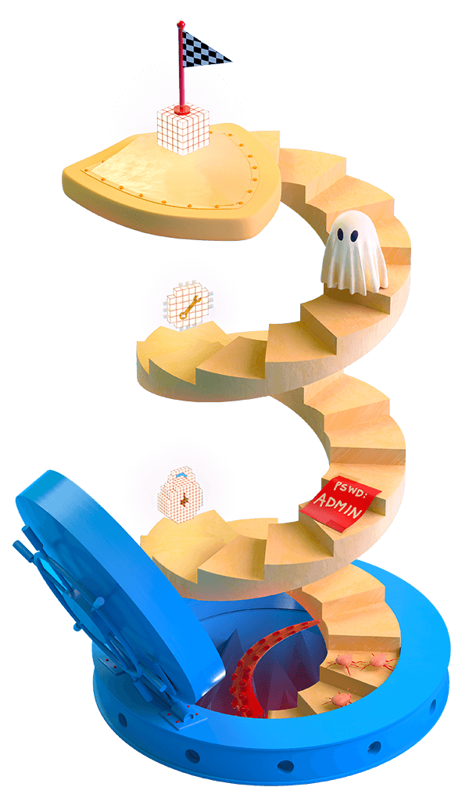

Bad security and reliability practices can lead to outages that affect millions. It's time for security to join the DevOps movement. And in a DevSecOps world, we can get creative about improving security.
Discovering one vulnerability per month used to be the norm. Now, software development moves quickly thanks to agile processes and DevOps teams. Vincent Danen tells us how that's led to a drastic increase in what's considered a vulnerability. Jesse Robbins, the former master of disaster at Amazon, explains how companies prepare for catastrophic breakdowns and breaches. And Josh Bressers, head of product security at Elastic, looks to the future of security in tech.
We can't treat security teams like grumpy boogeymen. Hear how DevSecOps teams bring heroes together for better security.
00:01 - House subcommittee representative
On June the 26th, 1991, Washington DC, much of Maryland and West Virginia, major portions of my home state were paralyzed by massive failure in the public telephone network. And yet, as technology becomes more sophisticated and network systems more interdependent, the likelihood of recurrent failures increases. It's not as though there wasn't warning that this would happen.
00:23 - Saron Yitbarek
In the early 1990s, 12 million Americans were hit with massive phone network failures. People couldn't call the hospital. Businesses couldn't call customers. Parents couldn't call their daycares. It was chaos and it was also a serious wake-up call, a wake-up call for a country whose infrastructure relied heavily on the computer systems that networked everything. Those computer networks were growing larger and larger, and then when they failed, yeah, they failed big time.
01:01 - Saron Yitbarek
A computer failure caused that phone system crash. This tiny one line bug in the code, and today the consequences of little bugs like that are higher than ever.
01:15 - Saron Yitbarek
I'm Saron Yitbarek and this is Command Line Heroes, an original podcast from Red Hat.
01:24 - Saron Yitbarek
So software security and reliability matter more than ever. The old waterfall approach to development, where security was just tacked onto the end of things, that doesn't cut it anymore. We're living in a DevOps world where everything is faster, more agile, and scalable in ways they couldn't even imagine back when that phone network crashed. That means our security and reliability standards have to evolve to meet those challenges.
01:55 - Saron Yitbarek
In this episode, we're going to figure out how to integrate security into DevOps, and we're also exploring new approaches to building reliability and resilience into operations. Even after covering all that, we know there's so much more we could talk about because in a DevSecOps world, things are changing fast for both the developers and operations. These changes mean different things depending on where you're standing, but this is our take. We'd love to hear yours too—so don't be shy if you think we've missed something—hit us up online.
02:34 - Saron Yitbarek
All right, let's dig in and start exploring this brand new territory.
02:43 - Saron Yitbarek
Here's the thing, getting security and reliability up to speed, getting it ready for a DevOps world, means we have to make a couple of key adjustments to the way we work. Number one, we have to embrace automation. I mean, think about the logistics of say two-factor authentication. Think of the impossibly huge task that poses. It's pretty obvious you're not going to solve things by just adding more staff, so that's number one, embracing automation.
03:15 - Saron Yitbarek
And then, number two, and this one's maybe less obvious, it's really changing the culture so security isn't a boogeyman anymore. I'm going to explain what I mean by changing the culture later on, but let's tackle these two steps one at a time. First up, embracing automation.
03:42 - Saron Yitbarek
Once upon a time app deployment involved a human-driven security review before every single release, and I don't know if you've noticed, but humans, they can be a little slow. That's why automation is such a key part of building security into DevOps. Take, for example, this recent data breach report from Verizon. They found that 81% of all hacking–related breaches involve stolen or weak passwords, and that's on the face of it such a simple problem. But it's a simple problem at a huge scale. Like I mentioned before, you're not going to staff your way out of 30 million password issues, right? The hurdle is addressing that problem of scale, the huge size of it, and the answer is the same every time. It's automation, automation.
04:36 - Vincent Danen
If you wait for a human being to get involved, it's not going to scale.
04:41 - D20 Babes player 2
Vincent Danen is the director of product security at Red Hat and over the 20 years he's been at this, he's watched as DevOps created a faster and faster environment. Security teams have had to race to keep up.
04:56 - Vincent Danen
When I started, it was a vulnerability per month and then it started becoming every other week and then every week, and now we're into the, you know, literally finding hundreds of these things every day.
05:08 - Saron Yitbarek
What's interesting here is that Vincent says there are actually more vulnerabilities showing up as security teams evolve, not less.
05:17 - Vincent Danen
We'll never get to the point where we say, oh, we're secure now, we're done. Our job is over. It'll always be there. It's just something that has to be as normal as breathing now.
05:27 - Saron Yitbarek
It turns out what counts as an issue for security and reliability teams is becoming more and more nuanced.
05:35 - Vincent Danen
As we're looking for these things, we're finding more and this trend is going to continue as you find new classes of vulnerabilities and things we maybe didn't think were important or didn't even know they existed before. We're finding out about these things much faster and there's more of them. And so the scale kind of explodes. It's knowledge. It's volume of software. It's number of consumers. All of these things contribute to the growth of security in this area and the vulnerabilities that we're finding.
06:06 - Saron Yitbarek
Once you see security as an evolving issue rather than one that gets "solved" over time, the case for automation, well, it gets even stronger.
06:18 - Vincent Danen
Well, I think with automation you can integrate this stuff into your development pipelines in a way that is very fast, for one. For two, you don't require human beings to do this effort, right? Computers don't need to sleep, so you can churn through code as fast as your processors will allow rather than waiting for a human to pour through some maybe rather tedious lines of code to go looking for vulnerabilities.
06:44 - Vincent Danen
And then with pattern-matching and heuristics, you can actually determine what's vulnerable even at the time of writing the code to begin with. So if you have, like, a plug-in, you know, for your IDE or your tool that you're using to write your code, it can tell you as you're writing it, like, hey, maybe this looks a little fishy, or you've just introduced a vulnerability and you can correct these things before you even commit the code.
07:08 - Saron Yitbarek
Security on the move. That's a huge bonus.
07:12 - Vincent Danen
There's just so much that's coming out every, every day, every hour even. With continuous integration and continuous delivery, you write code and it's deployed 10 minutes later. All right, so it's really critical to get that validation of that code automatically prior to it being pushed out.
07:32 - Saron Yitbarek
A whole breadth of tools are available so we can actually get this done, whether it's static code analysis or plug-ins for your IDE or a whole bunch of other options. We'll share some of our favorites in the show notes for this episode over at redhat.com/commandlineheroes.
07:53 - Saron Yitbarek
Once we've got those tools in place, they help keep security top of mind. The result, DevOps gets re-imagined as DevSecOps. Security gets baked into the process.
08:08 - Vincent Danen
In the same way that developers and operations kind of combined, you took those two disciplines to generate one. Now you have DevOps, and taking that third component of security and integrating that in with development and operations, I think is really important because having security as the afterthought is what makes security so reactive, so expensive, so damaging or potentially damaging to consumers. And when you plug that in right at the beginning, you have development being done, securities in there from start to finish and the operations work.
08:44 - Saron Yitbarek
Of course, like we mentioned at the top of the episode, automation is really just one half of a bigger pie and Vincent gets that.
08:53 - Vincent Danen
It's not just one piece. You can't just, you know, throw a tool in your CI/CD pipeline and expect everything to be okay. There's a whole gamut of different techniques and technologies and behaviors that are required to produce those ultimate beneficial results that we want to see.
09:15 - Saron Yitbarek
Automation does get us partway there, but we've got to remember the other piece—that slightly fuzzier piece. Say it with me, the culture piece, getting developers and ops both on board so that these issues aren't boogeyman anymore.
09:33 - Saron Yitbarek
We have to change a culture and some folks are learning to do that in the least painful way possible, with games.
09:44 - Saron Yitbarek
Let's take a swing over to the op side of things now. It's so easy to stand up huge infrastructure these days, but that doesn't mean we should be doing shoddy work. We should still be hammering on our systems, ensuring reliability, figuring out how to prepare for the unexpected. That's the mindset Jesse Robbins is working to bring about.
10:08 - Saron Yitbarek
Today Jesse is the CEO of Orion Labs, but before that he was known as the master of disaster over at Amazon. During his time there, Jesse was pretty much a wizard at getting everybody at least aware of these issues. And he did it with something called Game Day. These can involve thousands of employees running through disaster scenario drills, getting used to the idea of things breaking and getting intimate with the why and the how.
10:39 - Saron Yitbarek
Here's Jesse and me talking it over, looking especially at how reliability and resilience get built into the operation side.
10:47 - Saron Yitbarek
Very cool. So you are known for many things, but one of those things is the exercise Game Day, what you did at Amazon. What is that? What's Game Day?
10:58 - Jesse Robbins
So Game Day was a program that I created to test the operational readiness of the most vulnerable systems by breaking things at massive scale. So if you're a fan of what's called Chaos Monkey Now by the Netflix people and others, Game Day was the name for my program that definitely proceeded all of that. It was really heavily focused on building a culture of operational excellence, building the capability to test systems at massive scale when they're breaking, learn how they break to improve them. And then also to build a culture that is capable of responding to and recovering from incidents in situations. And it was all modeled and is all modeled after the incident command system, which is what the fire departments use around the world for dealing with incidents of any size.
11:56 - Jesse Robbins
It was sort of born from ...
11:58 - Saron Yitbarek
Crazy side note, Jesse trained to be a firefighter back in 2005. And that's where he learned this incident command system that ended up inspiring Game Day. So all the developers doing these disaster scenarios out there, you've got Jesse's passion for firefighting and emergency management to thank for that. Okay, back to our chat.
12:22 - Jesse Robbins
Resilience is the ability of a system, and that includes people and the things that those people build to adapt to change, to respond to failures and disturbances. And one of the best ways to build that—to build a culture that can respond to those types of environments and really understands how those work—is to provide people training exercises. And those exercises can be as simple as something like, you know, rebooting a server or as complicated as a injecting massive scale faults by turning off entire datacenters and kind of everything in between. And so what a Game Day is is first of all a process where you prepare for something by getting an entire organization together and kind of talking about how systems fail and thinking about what human beings know about how they expect failure to happen. And that exercise by itself is often one of the most valuable parts of kind of the beginning of a Game Day.
13:24 - Jesse Robbins
But then you actually run an exercise where you break something. It could be something big, it could be something small. It could be something that breaks all the time. And when you do that, you're able to study how everyone responds where things can move to. You can see the system breaking and that might be something that is safe to break, a well-understood component or it might be something that exposes what we call a latent defect. Those are those problems hiding in software or in technology or in a system at scale that we only can find out about when you have an extreme or an unexpected event. It's really designed to train people and to build systems that you understand how they're going to work under stress and under strain.
14:12 - Saron Yitbarek
And so when I hear Game Day, it makes me think, “Was this a response to something very specific that happened, that inspired it? Where'd it come from?”
14:20 - Jesse Robbins
So Game Day started during a period of time where I knew because of my role and because of my unique background as a firefighter and emergency manager, that it was important to change the cultural approach from focusing on the idea of preventing failure to instead embracing failure, accepting that failure happens. And part of what inspired that was both my own experience, you know, understanding systems, how like buildings fail and how civic infrastructure fails, and how disasters happened, and the strain that that puts on people. And saying, well, if we look at the complexity and operational scale that we have at the place of employment that I was at, the only way that we're really going to build and change and become a high-reliability, always-on environment, is truly to embrace the fire service approach. Where we know that failures will happen. It's not a question of if, it's a question of when. And then as my old fire chief would say, you don't choose the moment, the moment chooses you. You only choose how prepared you are when it does.
15:28 - Saron Yitbarek
Oh, that's a good one. So when you first started doing the Game Days and thinking about how to be prepared for disaster scenarios, was everyone on board with this or did you get any pushback?
15:40 - Jesse Robbins
Everyone thought I was crazy. So definitely there were people that resisted it. And it's interesting because there was a really simple way of overcoming that resistance, which is first creating what I call champions. You want to teach people, a small group, how to work in a way that is very safe and then you want to give them some exposure and then you want to use a set of metrics where you're able to say, look, let's just measure how many minutes of outage there is, how many minutes of downtime my team has that has this training and operates this way. Versus, I don't know, your team, who does not have that and who seems to think that doing this type of training and exercises isn't valuable or isn't important.
16:25 - Jesse Robbins
And once you do that kind of thing, you basically end up with what I call a compelling event. So, often there'll be an outage or some other thing where the organization suddenly and starkly realizes, oh my goodness, we can't keep doing things the way that we've been doing them before. And that becomes the method you use to overcome the skeptics. You use a combination of data and performance information on the one hand, coupled with metrics, and then great storytelling, and then you wait for the big one or the scary incident that happens and you say, you know, the whole organization needs this ability if we're going to operate at web scale or internet scale.
17:06 - Saron Yitbarek
Mm-hmm (affirmative). So what I love about this is that it didn't just stay within Amazon. It spread. A lot of other companies are doing it. A lot of people have ended up embracing this knowledge and this process to, you know, to be prepared. What is next? How do we continue carrying on the knowledge from Game Day into future projects and future companies?
17:31 - Jesse Robbins
I like to talk about it as convergent evolution. So every large organization that operates on the web has now adopted a version of both the incident management foundation that I certainly advocated for and has created their own Game Day testing. You know, Netflix calls it the Chaos Monkey. And Google has their Dirt program.
17:57 - Saron Yitbarek
So what are your hopes and dreams for Game Day in the future?
18:00 - Jesse Robbins
What I am excited about first of all is that we are seeing this evolution now from a thinking of silos and thinking of systems as being disconnected. Systems being fundamentally interconnected, interdependent and built and run by smart people around the world that are trying to do great and big things.
18:22 - Jesse Robbins
Years ago when I got my start, caring about operations was a backwater. It was not an interesting place. And suddenly we found ourselves being able to propagate the idea that developers and operations people working together are the only way that meaningful technology gets built and run in a connected world.
18:44 - Jesse Robbins
And so my hope for the future is number one, we're seeing more and more people embracing these ideas and learning about them. Understanding that when you build something that people depend on, you have an obligation to make sure that it's reliable, it's usable, it's dependable, it's something that people can use as part of their daily lives.
19:05 - Jesse Robbins
But also we're seeing a new discipline emerge. It's being studied, you know, there's PhD theses being written on it. It's being built out constantly.
19:16 - Saron Yitbarek
That's awesome.
19:16 - Jesse Robbins
There's books being written, there's all these new resources that aren't, you know, just a couple of people talking at a conference about how they think the world should work. And so my sort of inspirational hope is one, understand that if you're building software and technology that people use, you're really becoming part of the civic infrastructure. And so the set of skills that I've tried to contribute as a firefighter to technology and the skills that are now emerging that are taking that so much farther are part of the foundation for building things that people depend on everyday.
19:53 - Saron Yitbarek
Very nice. Oh, that's a great way to end. Thank you so much Jesse for your time.
19:56 - Jesse Robbins
Yeah, thank you.
11:59 - Saku Panditharatne
And I think all these factors work against adopting the best possible software.
20:02 - Saron Yitbarek
In Jesse's vision, exercises like Game Day or Chaos Monkey are a crucial part of our tech culture growing up, but they are also crucial for society at large. And I love that he's putting the stakes that high because he's right. Our world depends on the work we do. That much was obvious back in the 90s when telephone networks started crashing.
20:26 - House subcommittee representative
Modern life as we know it almost ground to a halt.
20:31 - Saron Yitbarek
And there's a duty that goes along with that. A duty to care about security and reliability, about the resilience of the things we build. Of course, when it comes to building security into DevOps, we're just getting started.
20:53 - Saron Yitbarek
That's Josh Bressers. He's the head of product security at a data search software startup called Elastic. For Josh, even though the computer industry's been maturing for a half-century or so, the kind of security we've been talking about here feels like it just came into its own.
21:11 - Josh Bressers
Practically speaking, as what I would say maybe a profession, security is still very new and there's a lot of things we don't understand.
21:19 - Saron Yitbarek
Here's what we do understand though, in a DevSecOps world, there are some pretty sweet opportunities to get creative about what security can achieve.
21:29 - Josh Bressers
I was recently talking to somebody about a concept where they're using user behavior to decide if a user should be able to access the system. Everybody has certain behaviors, be it where they're coming from, time of day they're accessing a system, the way they type, the way they move their mouse. And so they're actually one of those places that I think could have some very powerful results if we can do it right, where we can pay attention to what someone's doing. And then let's say I'm acting weird and you know, I'm weird because I just sprained my wrist. But you know, the other end doesn't know that.
22:05 - Josh Bressers
And so it might say, all right, something's weird, we want you to log in with your two-factor auth and we're going to also send you a text message or something. Right? And so we've just gone from essentially username and password to something more interesting. And so I think looking at a lot of these problems in new and unique ways is really going to be key. And in many instances, we're just not there yet.
22:27 - Saron Yitbarek
Getting there requires those two big steps we've been describing. Step one, it's that automation, so crucial because ...
22:35 - Josh Bressers
Humans are terrible at doing the same thing over and over again.
22:38 - Saron Yitbarek
Fair. And then we've got step two, the culture, all of us having a stake in security and the liability, no matter what our job title might say.
22:49 - Josh Bressers
When most people think of the security team, they don't think of happy nice people, right? It's generally speaking terrible, grumpy, annoying people, who if they show up, they're going to ruin your day. And nobody wants that, right?
23:10 - Saron Yitbarek
But I think we can get over that bias because we have to, think of it this way—more security threats happen every day and every day IT infrastructure is growing larger and more powerful. Put those two truths together and you better live in a world where security gets embraced. A very DevSecOps world where developers and operations are upping their security games, upping their reliability games. What I'm talking about is a future where automation is integrated into every stage and everybody's attitudes toward these issues become more holistic. That's how we're going to keep tomorrow's systems safe. That's how we're going to keep the phones ringing, the lights on, all of modern life healthy and strong. If you pull up Forbes’ list of the global 2000 organizations, that's the top 2000 public companies, it turns out a full quarter of them have embraced DevOps. Integrated agile workplaces are becoming the rule of the land. And in a few years thinking in terms of DevSecOps might become second nature. We want to go as fast as possible, but the long game is actually faster when every part of the team is in the race together.
24:40 - Saron Yitbarek
Next episode, we're getting hit by the data explosion. Humans have entered the Zettabyte era. By 2020, we'll be storing about 40 zettabytes of information on servers that mostly don't even exist yet. But how are we supposed to make all that data useful? How do we use high-performance computing and open source projects to get our data working for us? We find out in episode 6 of Command Line Heroes.
25:13 - Saron Yitbarek
And a reminder, all season long we're working on Command Line Heroes: The Game. It's our very own open source project and we've loved watching it all come together, but we need you to help us finish. If you hit up redhat.com/commandlineheroes, you can discover how to contribute. And you can also dive deeper into anything we've talked about in this episode.
25:39 - Saron Yitbarek
Command Line Heroes is an original podcast from Red Hat. Listen for free on Apple Podcasts, Google Podcasts, or wherever you do your thing. I'm Saron Yitbarek. Until next time, keep on coding.
Keep going
Get the newsletter
After each episode drops, we'll send you commentary from the Command Line Heroes team, as well as links that help you take a closer look at the topics we cover. It's as simple as that.
Presented by Red Hat
For 25 years, Red Hat has been bringing open source technologies to the enterprise. From the operating system to containers, we believe in building better technology together–and celebrating the unsung heroes who are remaking our world from the command line up.